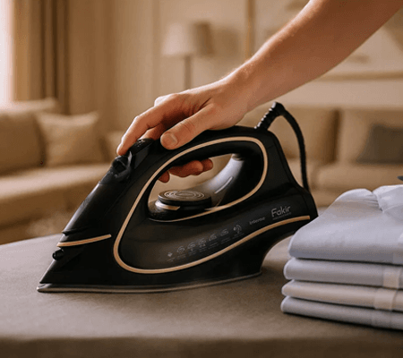
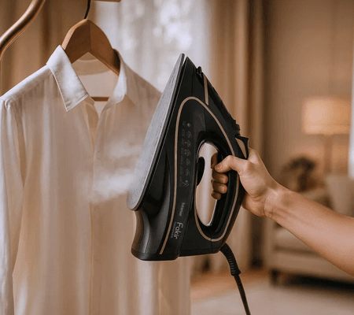
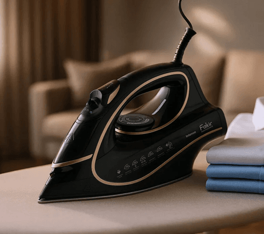
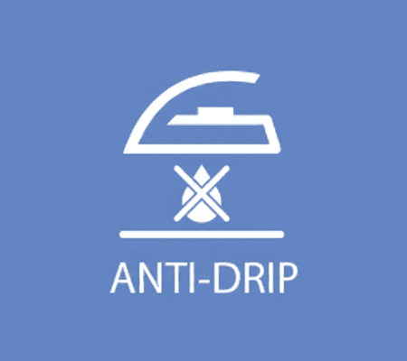
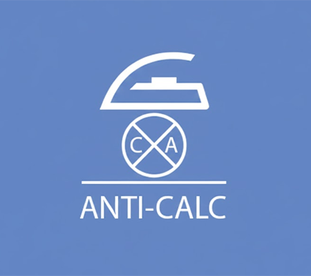

Kırışıklıklara Karşı Hızlı ve Pratik Çözüm!
Intense BE6020 Buharlı Ütü, günlük ütüleme rutinini daha düzenli ve kontrollü hale getirmek üzere tasarlanmıştır. Yüksek gücü ve dengeli buhar çıkışı sayesinde farklı kumaş türlerinde etkili sonuçlar elde etmeye yardımcı olur. Seramik tabanı ütünün kumaş üzerinde rahatça kayar, ısının eşit dağılmasıyla kırışıklıklar daha kolay açılır ve ütüleme süreci daha kısa sürede tamamlanır. 450 ml kapasiteli su tankı, uzun süre kesintisiz ütüleme imkânı sunarak sık sık su ekleme ihtiyacını azaltır. Damlama önleyici sistem, ütüleme sırasında oluşabilecek su damlalarını engelleyerek özellikle hassas ve açık renkli kumaşlarda temiz bir sonuç sağlar. Kendi kendini temizleme ve kireç önleyici sistemler, ütü tabanında birikebilecek kireç ve kalıntıların azaltılmasına katkıda bulunur; bu sayede cihazın performansının korunmasına yardımcı olur. Dikey buhar özelliği, askıdaki giysi ve perdelerde pratik çözümler sunarken, otomatik kapanma fonksiyonu güvenli kullanım açısından ek bir avantaj sağlar. 360 derece dönebilen kablosu, ergonomik yapısı ve hassas termostat kontrolü ile Intense BE6020, ütüleme sırasında daha rahat bir kullanım deneyimi sunmayı hedefler.

450 ml Su Tankı
Ütüleme sırasında su ekleme ihtiyacını ortadan kaldırır. Bu sayede, tek seferde daha fazla giysinizi ütüleyebilir ve zamandan tasarruf edebilirsiniz.

Dikey Ütüleme
Güçlü dikey buhar özelliği, askıdaki perdelerinizin ve giysilerinizdeki kırışıklıkları hızlıca açarak ütüleme sürecini pratik ve zaman kazandıran hale getirir.

Kendi Kendini Temizleme
Kireç ve biriken kalıntılar zamanla ütü tabanında performans kaybına yol açabilir. Kendi kendini temizleme fonksiyonu, bu kalıntıları düzenli olarak gidererek tabanın temiz kalmasına yardımcı olur ve ütünüzün verimli çalışmasını uzun süre korur.
Otomatik Kapanma
Dik konumda 8 dakika, yatay konumda 30 saniye sonra devreye girerek güvenli ve kontrollü kullanım sunar.

Damlama Önleyici Sistem
Ütüleme sırasında su damlalarının oluşması ve giysilerinizde leke bırakmasını engeller. Hassas ve açık renkli kumaşlarınızı güvenle ütüleyebilirsiniz.

Kireç Önleyici Sistem
Su tankındaki reçine filtre, suyu yumuşatarak kireç oluşumunu azaltır; böylece ütü tabanı daha rahat kayar ve giysilerde beyaz kalıntıların oluşması önlenir.